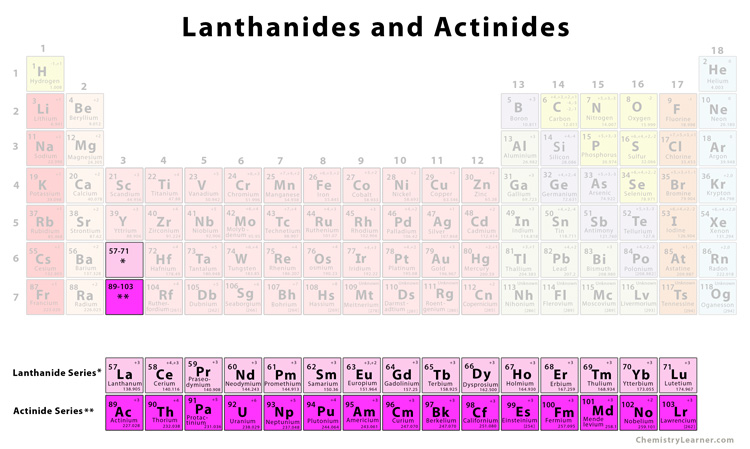
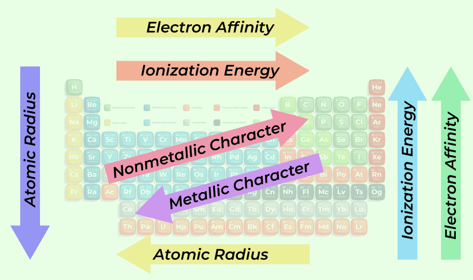

What is Periodic Table?
The periodic table is a tabular arrangement of chemical elements organized by increasing atomic number (number of protons) and grouped by similar chemical properties. Each element is placed in a specific position based on its atomic structure, which influences its properties and behavior. The table is divided into rows called periods and columns known as groups or families, which indicate elements with similar chemical characteristics. The periodic table helps scientists and students predict the behavior of elements, understand chemical reactions, and organize information about elements systematically.
A common example of the periodic table's relevance in daily life is its role in understanding the elements in common table salt, which is primarily sodium chloride (NaCl). Sodium (Na) and chlorine (Cl) are elements listed in the periodic table. Sodium is found in the alkali metals group, known for its high reactivity, while chlorine is found in the halogens group, known for its strong oxidizing properties. Knowing their properties helps explain why sodium chloride is stable and widely used in cooking and preserving food. The periodic table's arrangement allows us to understand why these elements combine to form a compound with such distinct characteristics and applications.
Why is it essential to learn Element?
Learning the periodic table is crucial because it forms the foundation of chemistry. The table organizes all known chemical elements in a systematic way, making it easier to understand and predict their properties and behaviors. By learning the periodic table, students and scientists can quickly identify the elements' atomic numbers, atomic masses, and how they interact with one another. This understanding is essential for grasping more complex chemical reactions and processes. For instance, knowing that elements in the same group, such as the noble gases, have similar properties helps explain why they are all inert and do not easily form compounds with other elements.
Understanding the periodic table is vital for various practical applications across multiple fields. In medicine, for example, knowledge of the periodic table helps in the development of pharmaceuticals and understanding how different elements interact within the body. Elements like iodine, which is critical for thyroid function, or calcium, which is important for bone health, are better understood through their positions and properties on the periodic table. In industry, the periodic table aids in selecting the right materials for products and processes, such as choosing metals for construction or catalysts for chemical reactions.
A solid grasp of the periodic table is essential for advancing scientific research and technology. The periodic table not only helps scientists predict the behavior of elements but also guides the discovery of new elements and compounds. For instance, researchers can use the periodic table to identify potential new materials with desirable properties for technology, such as superconductors or advanced batteries. Understanding the trends and patterns in the periodic table allows scientists to innovate and develop new technologies that rely on specific elemental properties, driving progress in fields like materials science, nanotechnology, and environmental science.
Layout and Organization
Rows (Periods)
The periodic table is organized into rows called periods. Each period corresponds to the number of electron shells an element has. As you move from left to right across a period, the number of protons in the nucleus increases, leading to changes in element properties. For example, elements in the first period (like hydrogen and helium) have one electron shell, while those in the second period (like lithium and neon) have two electron shells.

Column (Groups or Families)
The columns in the periodic table are known as groups or families. Elements within the same group share similar chemical properties due to having the same number of valence electrons. For instance, the alkali metals (Group 1) like sodium and potassium are highly reactive and have one valence electron, while the noble gases (Group 18) like neon and argon are inert and have full valence shells.
Blocks
The periodic table is divided into blocks based on the electron configuration of the elements:
- s-block includes Groups 1 and 2, plus helium in Group 18. These elements have their outermost electrons in s-orbitals.
- p-Block includes Groups 13 to 18, where the outermost electrons occupy p-orbitals.
- d-Block contains the transition metals (Groups 3 to 12), where electrons fill d-orbitals.
- f-Block contains the lanthanides and actinides, where electrons fill f-orbitals.
Metals, Nonmetals and Metalloids
- Metals are located on the left and center of the table, metals are typically shiny, good conductors of heat and electricity, and malleable. Examples include iron and gold.
- Nonmetals are found on the right side of the table, nonmetals are generally not shiny, poor conductors, and more likely to form gases. Examples include oxygen and sulfur.
- Metalloids, such as silicon and boron, have properties intermediate between metals and nonmetals and are found along the zigzag line that divides metals and nonmetals.
Special Sections
Lanthanides
These 15 elements, from lanthanum to lutetium, are placed in a separate row at the bottom of the periodic table and are known for their high magnetic susceptibility and use in advanced materials.
Actinides
These elements, from actinium to lawrencium, are also placed separately at the bottom of the table and include radioactive elements like uranium and plutonium.
Periodic Trends
Various trends are observable across the periodic table, such as atomic radius, ionization energy, and electronegativity. These trends help predict the behavior of elements based on their position within the table. For example, atomic radius decreases as you move from left to right across a period due to increasing nuclear charge, while it increases as you move down a group due to additional electron shells.
Research and Studies
Dmitri Mendeleev and the Periodic Table of Elements (1869)
Dmitri Mendeleev, a Russian chemist, is renowned for creating the first widely recognized periodic table. Mendeleev arranged elements by increasing atomic mass and observed that elements with similar properties appeared at regular intervals. This arrangement led to the periodic law, which states that the properties of elements are periodic functions of their atomic masses. Mendeleev's table was revolutionary because it predicted the existence and properties of elements that had not yet been discovered, such as germanium, gallium, and scandium, which were later confirmed to fit the predicted properties.
Henry Moseley's X-Ray Spectroscopy (1913)
Henry Moseley, a British physicist, refined the periodic table by determining that the atomic number, rather than atomic mass, should be the organizing principle. Moseley used X-ray spectroscopy to measure the frequencies of X-ray emissions from elements and discovered a consistent correlation between these frequencies and the atomic number. This finding led to Moseley's Law, which established the atomic number as the fundamental property for element classification and resolved discrepancies in Mendeleev’s table.
Discovery of Noble Gases (1894-1898)
The discovery of noble gases, including helium, neon, argon, krypton, and xenon, was crucial for understanding the full scope of the periodic table. Sir William Ramsay and Morris Travers identified these gases in the late 19th century. The noble gases were unique because they were chemically inert due to their complete valence electron shells, which led to the establishment of Group 18 in the periodic table. Their discovery expanded the periodic table and deepened the understanding of chemical reactivity and element behavior.
The Development of Quantum Mechanics (Early 20th Century)
The development of quantum mechanics in the early 20th century, with contributions from scientists like Niels Bohr, Werner Heisenberg, and Erwin Schrödinger, profoundly impacted the periodic table. Quantum mechanics provided a theoretical framework for understanding electron configurations and chemical bonding. Bohr’s model of the atom, which introduced the concept of electron orbitals, and the development of quantum theory explained the periodic trends observed in the table, such as atomic and ionic sizes, ionization energy, and electron affinity.
Facts about Element, Compound and Mixture
Before the concept of atomic number was established, elements were arranged by increasing atomic mass. This led to occasional discrepancies where elements did not fit well into the sequence. For instance, iodine and tellurium were discovered to have a reversed order when arranged by atomic mass compared to their chemical properties. Moseley's work on atomic numbers resolved these discrepancies and clarified the correct order of elements, highlighting the importance of atomic number over atomic mass.
Elements with atomic numbers greater than 92 (uranium) are not found naturally on Earth but are synthesized in laboratories using particle accelerators. These synthetic elements, such as einsteinium (element 99) and oganesson (element 118), are created by bombarding lighter elements with neutrons or other particles. Their creation and study help scientists understand the limits of the periodic table and the forces that govern atomic stability.
The layout of the periodic table is not arbitrary; it reflects the electron configurations of the elements. The table’s rows (periods) correspond to the principal energy levels of electrons, while the columns (groups) align elements with similar valence electron configurations. This arrangement explains recurring chemical properties and reactivity patterns, which are pivotal in predicting how different elements will interact.
Despite its comprehensive nature, the periodic table is still considered incomplete. Scientists predict the existence of elements beyond the current table's edge, known as the "island of stability," where superheavy elements might have longer half-lives than currently known. Research continues into these potential elements, and theoretical models suggest there may be even more undiscovered elements that could fit into the periodic table.
The periodic table has undergone significant changes since its initial creation. Mendeleev's original table was based on increasing atomic mass and chemical properties, but the modern table is organized by increasing atomic number. Additionally, the table has expanded from a few elements to over 100, with various blocks (s, p, d, f) introduced to represent different types of electron orbitals. These changes reflect advancements in scientific understanding and the discovery of new elements.
Quiz
1. How did the Hubble Deep Field observation in 1995 change our understanding of the universe?
2. Describe one contribution of ancient Babylonians to early astronomy.
3. Explain the impact of the Islamic Golden Age on the development of astronomy during the medieval period.
4. How did the heliocentric model proposed by Copernicus revolutionize our understanding of the solar system?
5. What are some of the key research areas in contemporary astronomy, and why are they significant?